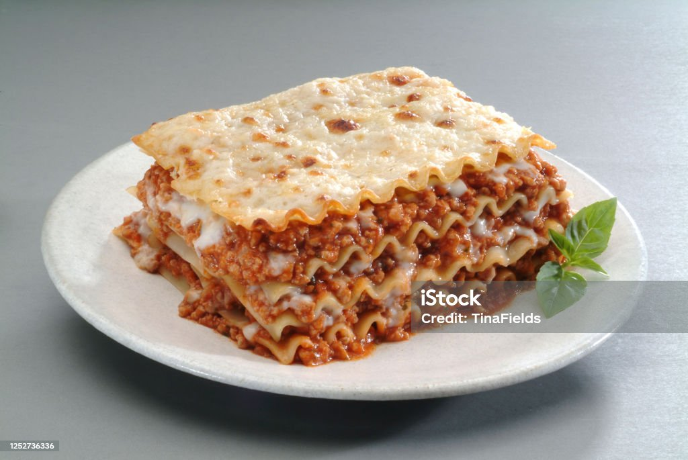
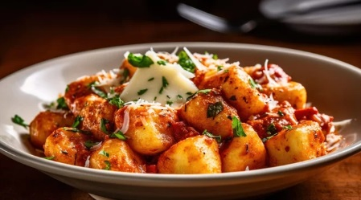

MACARRÃO

Macarrão caseiro com tomate cereja e molho vermelho.
R$ 18,90 (porção)
LASANHA
Lasanha de carne com molho bolonhesa.
R$ 13,90 (pedaço)
MACARRÃO
Macarrão caseiro com tomate cereja e molho vermelho.
R$ 18,90 (porção)
NHOQUE
Nhoque de batata ao molho vermelho e mussarela.
R$ 14,90 (porção)